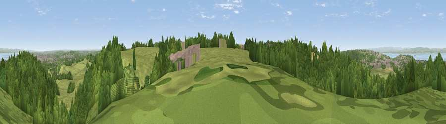

Viewpoint near Portbury
#9447 in England · top 16% of its area beats it · near PortburyThe view, rendered

A 360° render of this exact spot computed from the terrain model, tree cover and land cover — summer colours, afternoon light, calibrated against photographs of famous viewpoints. Real trees, hedges and buildings will differ in detail.
The panorama
Grey silhouette: terrain skyline in each direction (720 bearings, Earth curvature and refraction included). Dashed green: skyline with trees (+15 m) and buildings (+8 m) as obstacles. Blue strip: how far the ground is visible on each bearing.
Where the view opens
Wedge length = distance to the farthest visible ground on that bearing (vegetation-aware). Rings at 10, 25 and 50 km.
What fills the view
51% woodland · 34% grassland · 7% cropland · 5% built-up · 3% water
Angular shares of the visible panorama (visual magnitude), not map area. Landscape diversity 0.50 (0–1 Shannon).
Key numbers
More beautiful places nearby
The staircase of upgrades: each row has a higher view potential than everything closer. Driving times are estimates from straight-line distance, calibrated against real road routing — check an actual route before setting out.
| Place | Direction | Drive | Score |
|---|---|---|---|
| Viewpoint near Tickenham | WSW · 4 km | ~10 min | 72.1 |
| Dial Hill | WSW · 9 km | ~17 min | 74.9 |
| Beacon Batch | S · 17 km | ~29 min | 79.4 |
| Bleadon Hill [Loxton Hill] | SW · 21 km | ~35 min | 79.6 |
| Viewpoint near Stinchcombe | NE · 34 km | ~52 min | 80.5 |
| Viewpoint near Holford | SW · 48 km | ~68 min | 80.8 |
| Viewpoint near East Quantoxhead | SW · 48 km | ~69 min | 83.1 |
| Viewpoint near Holford | SW · 48 km | ~69 min | 85.9 |
51.46380, -2.73373 · source: screening · position refined by local search. Computed location — check access rights before visiting.